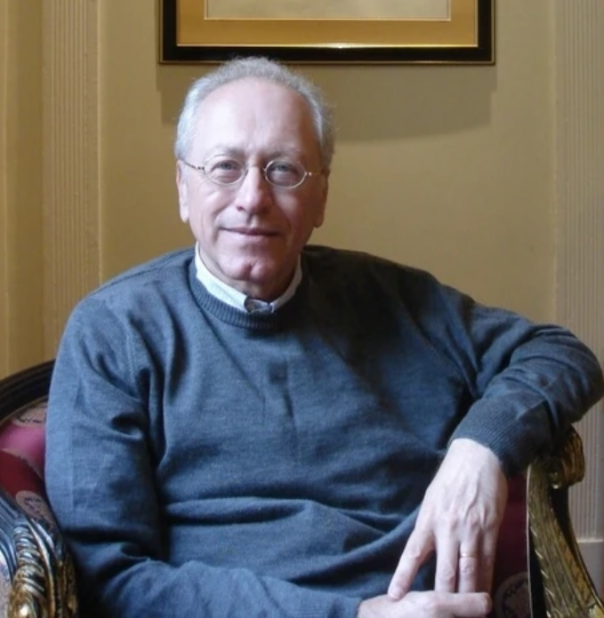

Texto-base de Andrew Feenberg
Apresentação
Jean César dos Reis Barbosa
Gissele Quirino Herculano

Filósofo estadunidense (nascido em 1943), é reconhecido internacionalmente como um dos maiores teóricos da Filosofia da Tecnologia. É o atual Canada Research Chair na Simon Fraser University (Canadá).
Doutorou-se em Filosofia em 1972, época em que foi aluno direto e orientando de Herbert Marcuse (Escola de Frankfurt), herdando a profunda compreensão da dialética marxiana e da teoria crítica.
Tony (One Dime Radio):
"Andrew, seria ótimo se você pudesse nos contar um pouco sobre sua relação com Herbert Marcuse."
Andrew Feenberg:
"A filosofia americana nos anos 60 era quase toda analítica. Um amigo me disse para olhar a Universidade da Califórnia porque lá tinha o Marcuse, 'um cara que escreve sobre Marx e Freud'. Eu disse: Qualquer cara louco o suficiente para fazer isso, é louco o suficiente pra mim."
Quando Feenberg usa a expressão "crazy enough" na entrevista, não há conotação pejorativa. Trata-se de um elogio profundo:
Juntar Marx e Freud era considerado uma heresia acadêmica; exigia uma coragem beirando o "suicídio profissional" nos EUA dos anos 60.
O termo evoca o gênio subversivo. Significa quebrar totalmente as regras do que o mainstream considerava como a "filosofia séria".
A expressão "is crazy enough for me" demonstra alinhamento vital. "Essa é exatamente a minha tribo e o nível de rebeldia que busco".
Envolto pela "Nova Esquerda", Feenberg participou ativamente das históricas manifestações estudantis de Maio de 1968, em Paris.
Sua teoria não é puramente abstrata: ela foca na materialidade da ação e que as massas têm poder para alterar estruturas tecnológicas.
Feenberg atua também como desenvolvedor da técnica. Na década de 1980, foi um dos pioneiros globais da Educação Online e fóruns assíncronos.
Isso prova sua tese central: a tecnologia não possui um imperativo autônomo autoritário. Se projetada com valores democráticos, serve à emancipação.
Uma filosofia especificamente política da tecnologia.
Muitas teorias veem a tecnologia como uma marcha inevitável e neutra, governada por princípios científicos inquestionáveis. Feenberg rompe com essa visão tecnocrática.
Sua filosofia orienta-se para o estudo de projetos técnicos locais e para as controvérsias públicas reais que a tecnologia desencadeia. A técnica não é um destino natural; é um campo de batalha político.
A teoria "desontologiza" grandes filosofias para resgatar a crítica da racionalidade:
Crítica ao cientificismo "unidimensional". Evidencia que as grandes resistências sempre nascem a partir da nossa "experiência cotidiana".
Fornece o arcabouço insubstituível para entender como o processo de trabalho é forjado pelo capital para dominar a classe trabalhadora.
Comprova empiricamente que a técnica tem caminhos alternativos e é impulsionada pelos interesses dos atores sociais em disputa.
Resgate estritamente crítico da fenomenologia heideggeriana contra a redução do ser humano a mero "fundo de reserva" instrumental.
Tony (One Dime Radio):
"Gostaria que você fechasse com a relação de Marcuse com Heidegger. Claro, ele foi aluno dele, mas tinha uma relação ambivalente."
Andrew Feenberg:
"Ele tinha um sentimento ruim sobre Heidegger, que se tornara nazista. Quando Heidegger negou seu erro com desculpas cínicas, Marcuse respondeu: 'Nenhum filósofo pode se permitir dizer uma coisa dessas'. Ele nunca mais o contatou."
"Todo mundo acredita em 90% do marxismo; os marxistas são aqueles que também acreditam nos outros 10%".
O construtivismo social provou que a técnica não tem imperativos naturais. Porém, falha grotescamente ao negar a existência do Poder de Classe como categoria estrutural.
Feenberg critica Bruno Latour por diluir o poder em meras "associações de rede". É preciso resgatar Marx porque o Capitalismo é a macroestrutura social que condiciona e monopoliza as escolhas de projeto técnico na base da sociedade.
Se ignorarmos a categoria do Poder Capitalista, é impossível explicar a gravidade de nossa época:
Para Marx, o capitalista é um "simples agente de estruturas anônimas".
Não se trata de apontar falhas de caráter. O capitalista é impelido a agir de forma brutal por estruturas irrefreáveis: as pressões do mercado concorrencial e a ameaça da resistência trabalhista.
Isso explica a adoção ininterrupta de tecnologias focadas estritamente na desqualificação do trabalho vivo e no esgotamento da natureza, independentemente das intenções do gestor.
Tony (One Dime Radio):
"Críticos descartam Marx devido à 'teleologia'... a conclusão não seria que o socialismo é mecanicamente inevitável?"
Andrew Feenberg:
"O problema básico que Marx lida é como passar de uma fase onde as leis naturais da economia prevalecem sobre os humanos... para um novo sistema no qual as pessoas têm a capacidade de organizar sua existência de forma consciente."
Debater politicamente a tecnologia requer superar um triplo dilema nas ciências sociais:
A União Soviética importou a tecnologia capitalista e, junto com ela, os seus métodos brutais de controle e divisão do trabalho enraizados no hardware.
A Desqualificação da Força de Trabalho
A tecnologia capitalista não foca em facilitar a vida; ela é desenhada para roubar e materializar na máquina o conteúdo intelectual da produção. Isso garante que o trabalho seja executado mecanicamente por operários desqualificados, privando-os da capacidade cultural de disputar o poder.
Três "Tipos Ideais" de controle operacional nas sociedades modernas:
Imposto de forma autoritária por acionistas e burocratas, isentos de responsabilidades humanas para com subordinados.
O pilar do socialismo, no qual os subordinados e afetados escolhem o rumo do projeto e controlam processos.
Trabalhadores hiper-qualificados (médicos, professores) possuem autonomia e votam as metas das instituições.
Na empresa capitalista, a finalidade não é produzir coisas úteis (Valor de Uso), mas multiplicar o capital (Valor de Troca).
Essa alienação das obrigações comunitárias concede à gestão a Autonomia Operacional: passe livre para perseguir metodologias de pura eficiência matemática na máquina, blindados de responsabilização ética local.
"A neutralidade técnica do capitalismo não é absoluta. Ela é relativa e desenhada à força pela divisão social do trabalho".
Instituições públicas possuíam o valor social imaterial de educar o ser humano, que dependia da gestão colegiada viva dos professores.
No Neoliberalismo, a educação é quantificada por rankings e provas. A Autonomia Operacional da burocracia aniquila o controle colegiado docente (simulacro das métricas financeiras), reduzindo professores a repassadores de apostilas.
O imperativo de maximizar "engajamento" varreu considerações sobre saúde mental coletiva, erguendo a colossal máquina de vigilância privatizada da Internet.
Despejar toxinas no rio é o método matemático "mais eficiente" para o lucro da mina. Resta à sociedade apenas a reação passiva judicial a posteriori.
"Uma reinvindicação material, e não uma recusa cega da expertise técnica."
Especialistas historicamente ignoraram a segurança ocupacional e a poluição, tratando a vida como "externalidade".
A democratização é o embate popular para forçar a modificação da tecnologia na prancheta do projeto, garantindo o direito à voz dos não-especialistas e das vítimas ambientais.
Tony (One Dime Radio):
"Qual é essa compreensão cotidiana do mundo nas sociedades capitalistas que a Escola de Frankfurt denuncia?"
Andrew Feenberg:
"Não é que Marcuse diga que a ciência é errada... mas ela tem limitações gravíssimas se você a aplicar de forma puramente matemática e unidimensional à complexidade do mundo cotidiano."
A dialética da democratização no escândalo hídrico de Flint (EUA):
O chumbo nos canos era um objeto de gestão. Custos logísticos e pesos atômicos baseados em orçamentos frios.
O chumbo é prova empírica do racismo estrutural e abandono de classe que danificou o sistema nervoso de uma geração.
A Concretização (A Superação)
A luta resulta num projeto físico reconfigurado que soluciona os paradoxos do poder.
Feenberg une as perspectivas: como unificar a visão causal da Engenharia com os valores de uso da Sociologia?
A Tecnologia possui uma "Teoria de Duplo Aspecto".
Para a máquina existir, a técnica sofre simultaneamente uma brutal simplificação física da natureza combinada a uma imediata atribuição de significado ditada pela cultura.
Descontextualização e Redução.
Domínio frio da causalidade para extração. O objeto natural é arrancado e destituído do que não gera valor.
Ex: A motosserra rasgando o caule para extração crua.
Recontextualização Sociotécnica.
Inserção e ordenação humana baseada nas exigências da divisão do trabalho e lucro.
Ex: O tronco vira a "tábua" viável para a linha de montagem da habitação.
Tony (One Dime Radio):
"Por que a linguagem cotidiana contrasta tanto com as deduções científicas frias de positividade?"
Andrew Feenberg:
"Porque o povo usa o pensamento no sentido de Aristóteles... para a sociedade, ao olhar os seres (uma criança, uma floresta), eles são dotados de 'potencialidades', daquela característica normativa, do devir ético que clama por se desenvolver na vida."
As "coisas" interagem com a humanidade em três frentes vitais:
1. Co-Construção da Identidade: "A técnica forja o sujeito. O operário se torna classe operária ao submeter-se à fábrica".
2. Configuração de Mundo: A infraestrutura estabelece os limites lógicos da civilização.
3. Os Antiprogramas (A Fúria da Natureza): O capital cria externalidades (aquecimento global) que reagem violentamente e ameaçam a existência humana.
"A administração corporativa moderna é desenhada intencionalmente para suprimir a ação crítica. Reduzindo todos a recursos controláveis rumo à alienação pacífica."
Culpar "erros cognitivos universais" pela crise ecológica é uma armadilha covarde, pois inocenta a macroestrutura do Capital.
A crise tóxica não é fruto da "mente humana em geral", é exigência matemática da taxa de expansão de capital. Os manifestantes climáticos exigem a alteração do código técnico da indústria, submetendo o mercado à força da vida.
"A Filosofia não pode mais se abster. Expor as estruturas de dominação escondidas sob o manto do código tecnológico é a principal tarefa militante em nossos dias."